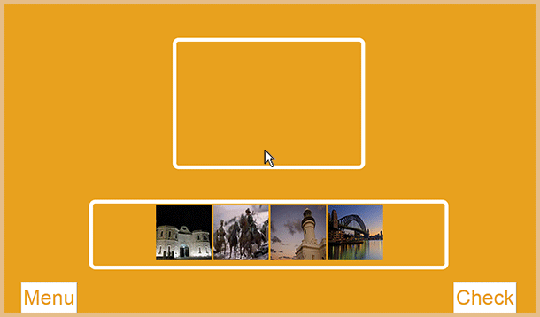
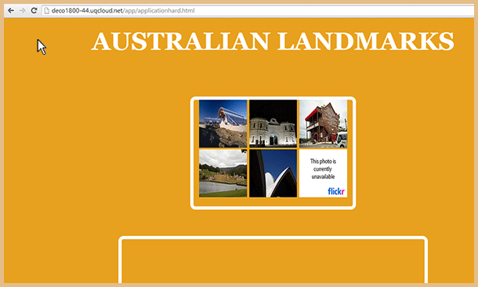

Click and drag image to timeline bar from oldest (left side) to newest (right side). The images vary in number depending on difficulty.
Once images are placed onto the timeline, scroll down to check the answer. If wrong, you'll have to rearrange the image order to the correct one.
The image can only be sent to the right and will automatically clip to the end. And images to the right side of the image you moved will move up a space in the timeline.
If a broken image (shown above) appears, you'll have to refresh the page until a working image appears.